LabSync 1.0 · Operación y pruebas funcionales
| Elemento | Detalle |
|---|---|
| Objetivo | Permitir que una persona usuaria opere LabSync y ejecute pruebas manuales repetibles sin depender de conocimiento del código. |
| Alcance | Acceso, registro, paneles, reservas, bitácora, fallas, inventario, software, ciclos y horarios, mantenimiento, alertas, exportaciones y cierre de sesión. |
| Fuera de alcance | Administración física de MySQL/MariaDB y desarrollo del código; ambos se describen en el manual técnico. |
| Evidencia visual | Las capturas se renderizaron desde las clases Swing reales con una copia temporal de datos; no son bocetos. |
| Precaución | Las pruebas que crean, aprueban, cancelan, finalizan o dan de baja registros modifican la base conectada. Utilice una base exclusiva de pruebas. |
LabSync es una aplicación de escritorio Java Swing para coordinar el uso académico y técnico de laboratorios. Cada cuenta entra con un rol y ve únicamente las operaciones previstas para ese perfil.
| Perfil | Puede hacer | No debe esperar |
|---|---|---|
| Estudiante | Consultar disponibilidad, solicitar un equipo, revisar sus reservas y crear/consultar reportes de falla. | Reservar el laboratorio completo, aprobar solicitudes o administrar inventario. |
| Profesor | Solicitar un laboratorio completo para una actividad extraordinaria, consultar/cancelar sus reservas, registrar clases o reservas en bitácora y reportar fallas. | Aprobar su propia reserva o modificar horarios regulares. |
| Laboratorista | Resolver reservas, consultar/exportar bitácora, administrar inventario y software, atender fallas, programar/cerrar mantenimiento y administrar ciclos/horarios. | Crear una reserva desde los formularios de estudiante/profesor. |
| Externo | La cuenta puede registrarse. | La interfaz funcional para este rol aún no está implementada; al iniciar sesión aparece un mensaje informativo. |
| Entidad | Estados | Lectura operativa |
|---|---|---|
| Reserva | Pendiente, Aprobada, Rechazada, Cancelada, Finalizada | Pendiente y Aprobada cuentan como ocupación activa. Finalizada representa un uso cerrado. |
| Reporte de falla | Pendiente, En revisión, Atendida, Cancelada | En revisión bloquea la disponibilidad del laboratorio afectado. |
| Inventario | Disponible, En mantenimiento, Con falla, Baja | Baja conserva el historial; no significa borrado físico. |
| Mantenimiento | Pendiente, En proceso, Realizado, Cancelado | Pendiente/En proceso puede bloquear el laboratorio desde la fecha programada. |
| Software | Actualizado, Desactualizado, Pendiente de instalación, Pendiente de eliminación, Eliminado | Eliminado mantiene la fila como historial. |
| Alerta | Nueva, Leída, Atendida | La campana muestra asuntos pendientes y permite ir al módulo de resolución. |
LabSync/target/LabSync-1.0.jar..xlsx.En Windows, haga doble clic en Ejecutar-LabSync.cmd. En una terminal:
java -jar .\LabSync\target\LabSync-1.0.jar
En Linux o macOS:
java -jar ./LabSync/target/LabSync-1.0.jar
El resultado esperado es la pantalla de inicio de sesión. Si aparece “No hay conexión con la BD”, el programa inició correctamente pero no logra abrir la conexión configurada.
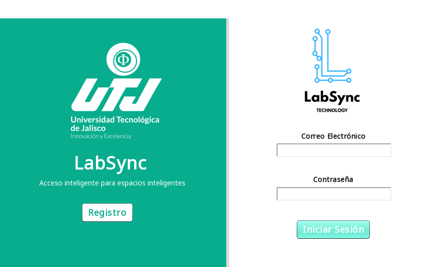
| Condición | Mensaje/resultado esperado | Acción |
|---|---|---|
| Uno o ambos campos vacíos | “Por favor, completa ambos campos para ingresar”. | Complete los dos campos. |
| Correo o contraseña incorrectos | “El correo electrónico o la contraseña son incorrectas”. | Verifique mayúsculas, espacios y cuenta. |
| Base inaccesible | “No hay conexión con la BD”. | Avise al responsable técnico; no intente registrar datos. |
| Rol Externo | Mensaje “INTERFAZ EXTERNO”. | Es una limitación conocida de esta versión. |
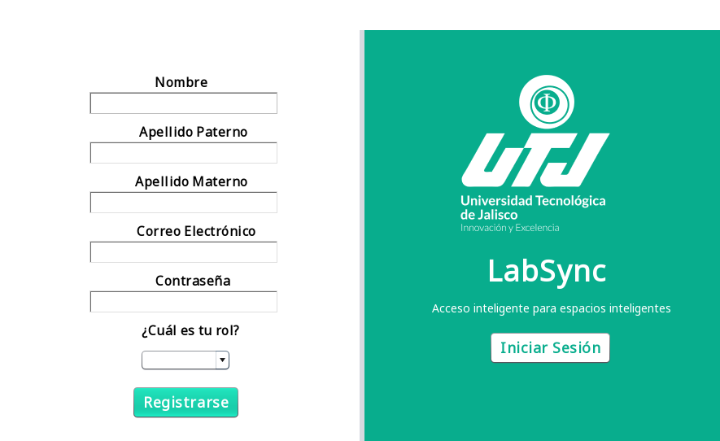
| Rol | Dominio requerido | Datos adicionales |
|---|---|---|
| Estudiante | @soy.utj.edu.mx | Matrícula (10 dígitos), carrera y turno. |
| Profesor | @utj.edu.mx | No solicita perfil adicional. |
| Laboratorista | @utj.edu.mx | Turno y pisos encargados. |
| Externo | Sin restricción institucional en el formulario | Institución de origen y motivo de visita. |
Pulse Cerrar Sesión en el encabezado. Confirme cuando la aplicación lo solicite. Debe volver al acceso y dejar de actualizar la ventana anterior. Nunca cierre una sesión compartida dejando el equipo desbloqueado.
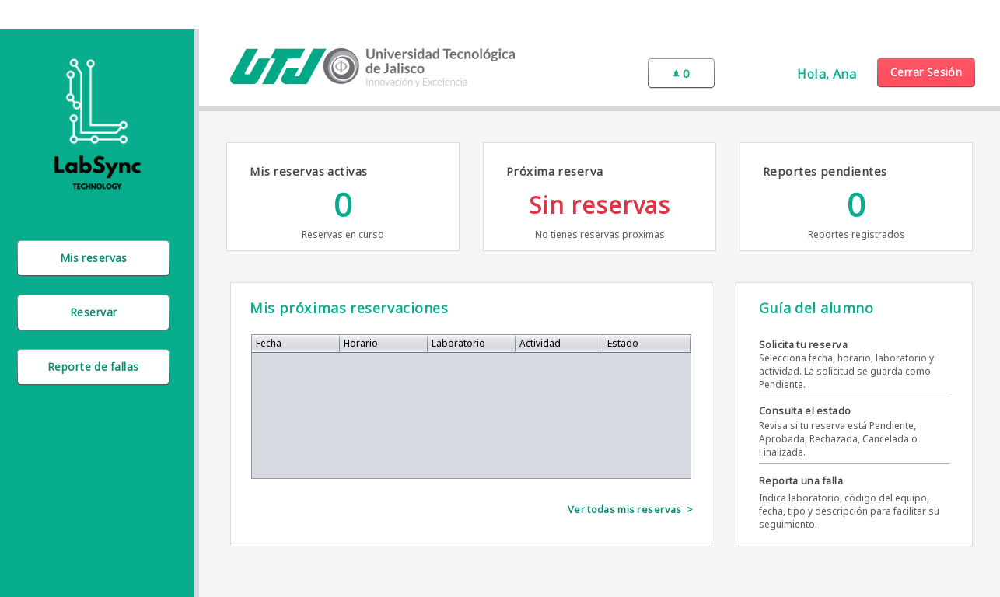
El panel resume reservas activas, próxima reserva, reportes pendientes y próximas reservaciones. El menú lateral ofrece Reservar, Mis reservas y Reporte de fallas. Los valores se actualizan periódicamente; espere unos segundos antes de concluir que un cambio no se guardó.
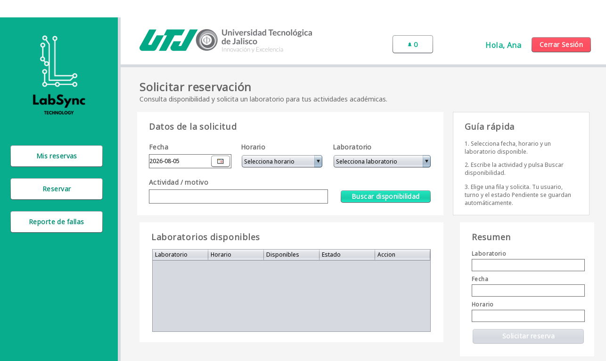
Use Mis reservas en el menú. La vista de reservaciones se reutiliza para consultar el historial de la cuenta. Verifique fecha, horario, laboratorio, actividad y estado. Una reserva Aprobada autoriza el uso; Pendiente aún requiere resolución; Rechazada/Cancelada no ocupa; Finalizada ya fue cerrada.
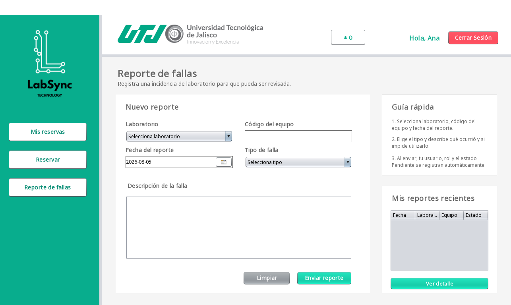
Ejemplo útil: “M-01, equipo CCD-014; al abrir NetBeans se cierra después de cargar el proyecto; ocurrió 10:35; reinicio sin mejora”. Evite “no sirve”, porque no permite reproducir la falla.
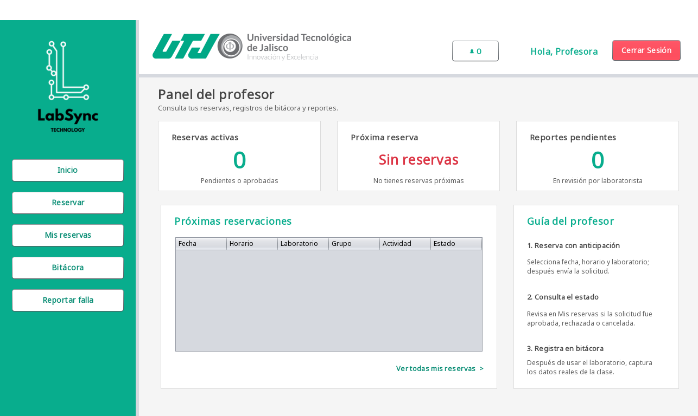
El menú contiene Inicio, Reservar, Mis reservas, Bitácora y Reportar falla. El panel muestra reservas activas, próxima reserva, reportes pendientes y el historial próximo.
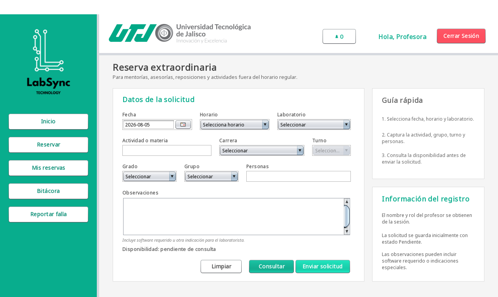
Las clases regulares se administran en Horarios y no se vuelven a reservar. Este formulario es para mentorías, reposiciones, asesorías o actividades fuera del horario regular.
La cantidad de personas no puede superar la capacidad del laboratorio. Una reserva de profesor no comparte horario con reservas individuales. Si modifica fecha, horario o laboratorio después de consultar, la confirmación de disponibilidad se invalida y debe consultar otra vez.
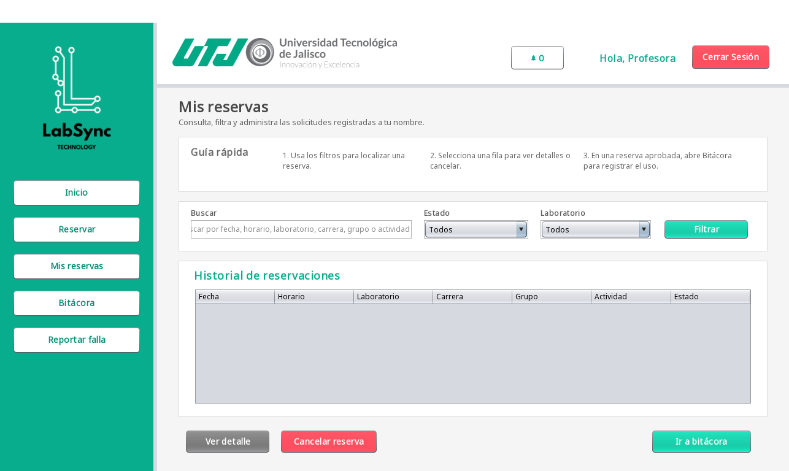
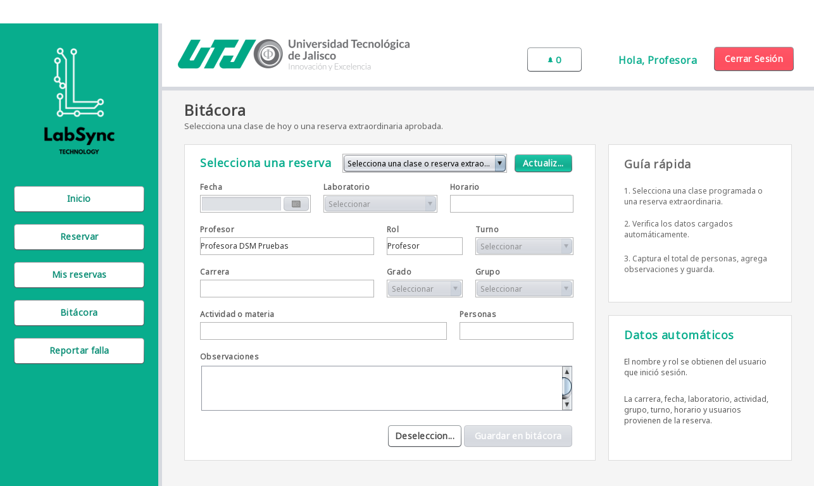
Una clase regular se identifica por horario y fecha; una reserva por su identificador. No se debe registrar dos veces la misma sesión. La bitácora guarda una fotografía textual para que cambios futuros en horarios o nombres no alteren el historial.
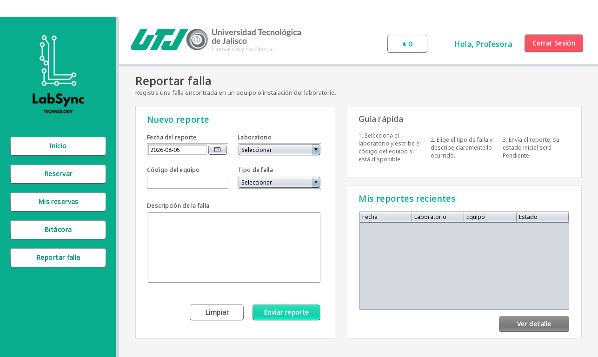
El procedimiento es equivalente al del estudiante: fecha, laboratorio, código de equipo, tipo y descripción. Use el código correcto y describa si el problema afecta un equipo o todo el laboratorio. El laboratorista podrá relacionar el reporte con mantenimiento.
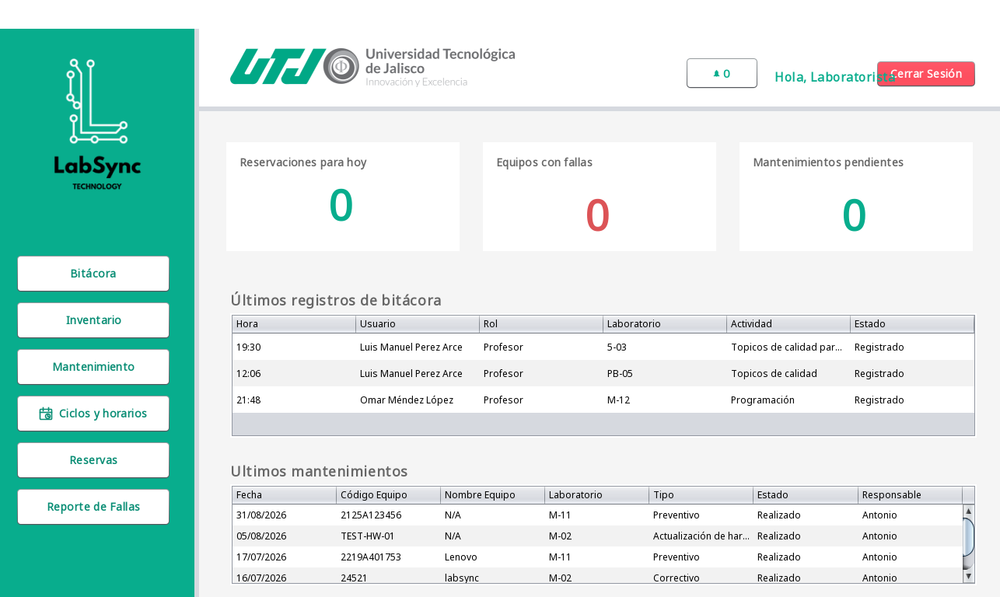
El panel reúne reservaciones pendientes, equipos con fallas, mantenimientos pendientes, últimos registros de bitácora y mantenimientos. El menú lateral centraliza Bitácora, Inventario, Mantenimiento, Ciclos y horarios, Reservas y Reporte de fallas.
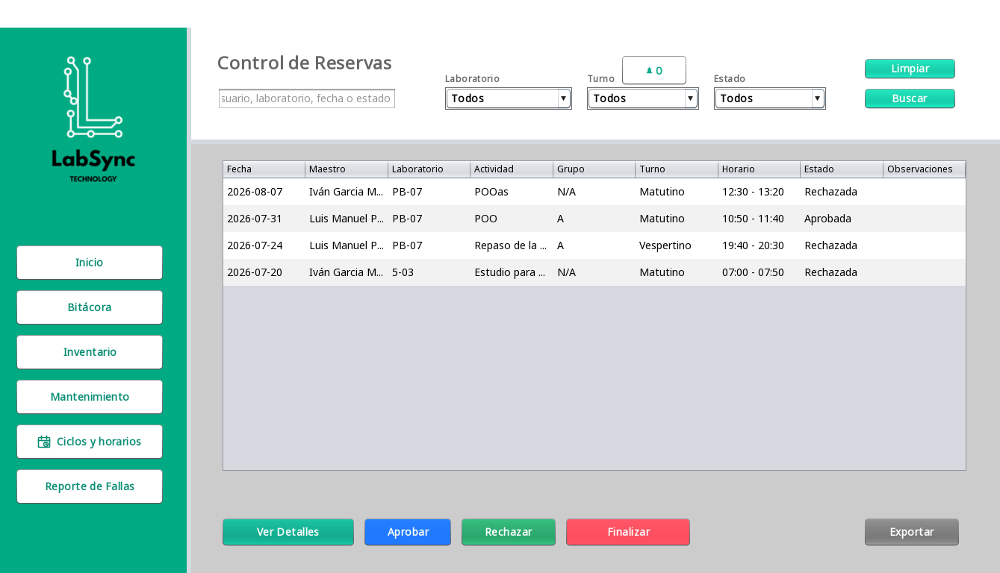
| Acción | Precondición sugerida | Verificación posterior |
|---|---|---|
| Aprobar | Reserva Pendiente, fecha vigente y disponibilidad aún válida. | Estado Aprobada y alerta al solicitante. |
| Rechazar | Reserva Pendiente y motivo operativo. | Estado Rechazada, observación y alerta. |
| Finalizar | Reserva Aprobada cuyo horario ya se atendió. | Estado Finalizada; deja de ocupar disponibilidad. |
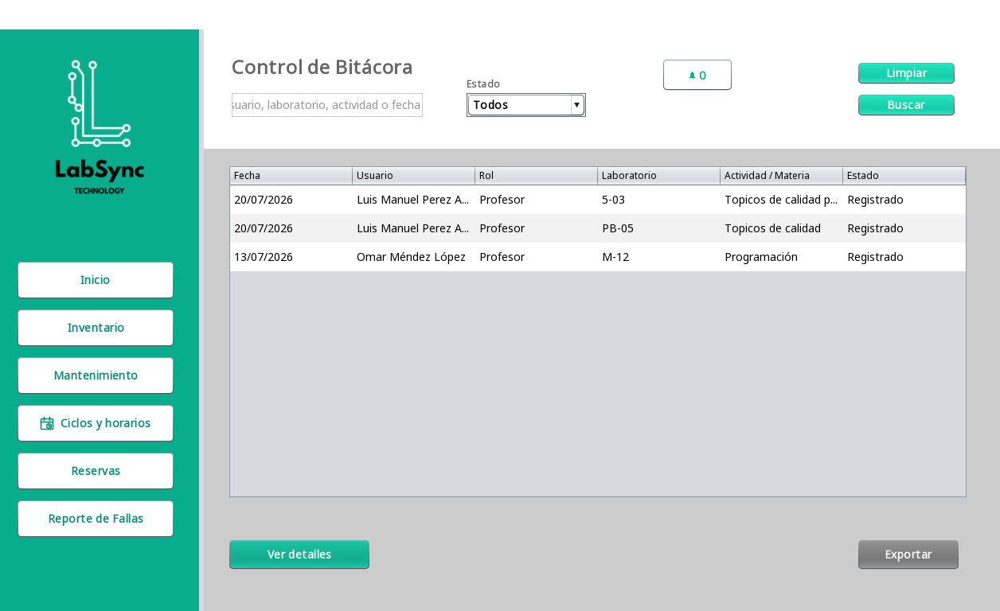
Filtre por texto y estado, seleccione una fila para Ver detalles y use Exportar para crear bitacora_labsync.xlsx. El detalle permite confirmar referencias, usuario, grupo, laboratorio, actividad, horario, personas y observaciones.
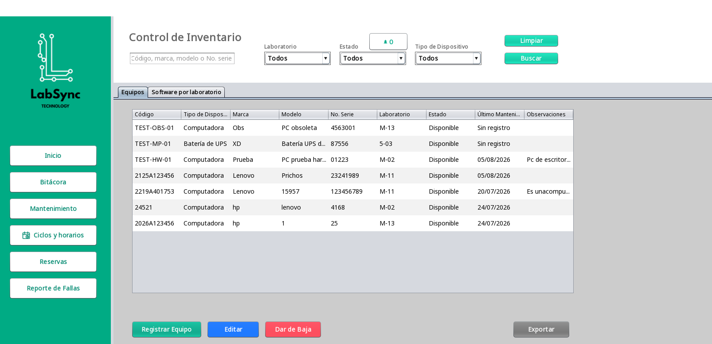
inventario_labsync.xlsx con los filtros actuales.Abra la pestaña Software por laboratorio. Puede filtrar por laboratorio, estado, uso académico o texto; registrar/editar nombre, versiones instalada y objetivo, uso, estado, fecha de revisión y observaciones; y cambiar estado sin borrar el historial.
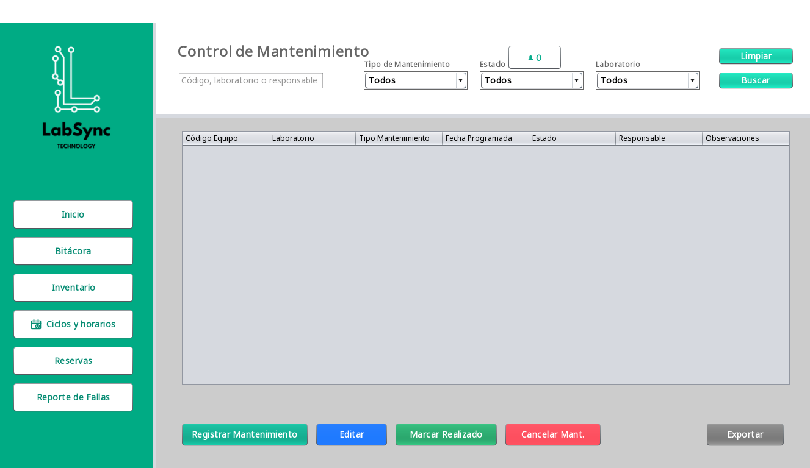
mantenimiento_labsync.xlsx.| Tipo | Regla al realizar |
|---|---|
| Preventivo, Correctivo, Actualización de software, Actualización de hardware | El equipo vuelve a Disponible y se actualiza la fecha de último mantenimiento. |
| Disposición de material peligroso | Requiere observaciones y deja el inventario en Baja, conservando historial. |
| Retiro de equipo obsoleto | Requiere observaciones y deja el inventario en Baja, conservando historial. |
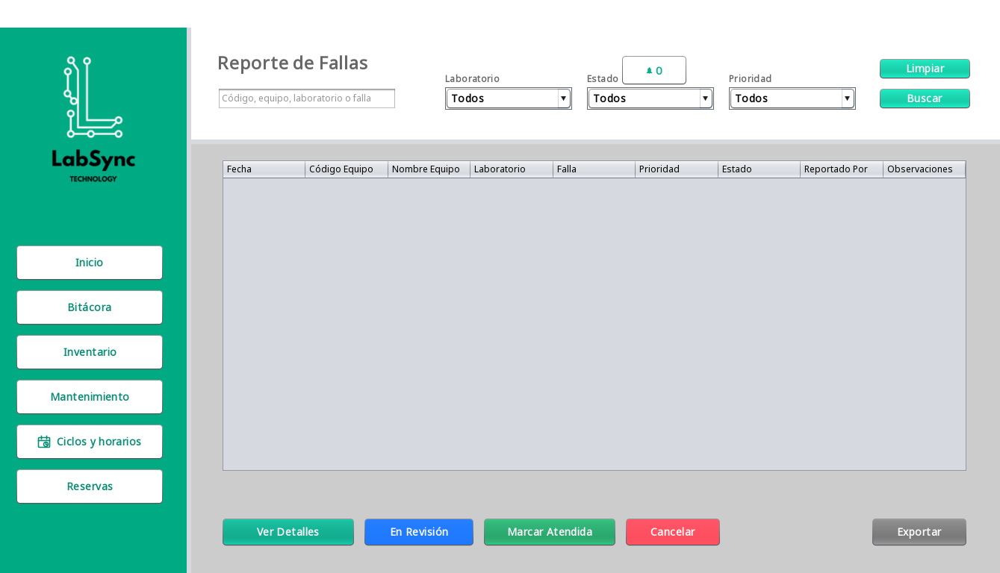
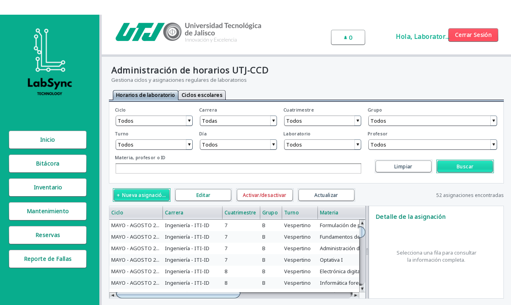
El sistema rechaza traslapes del mismo ciclo/día si coincide el laboratorio, el profesor o la identidad completa del grupo (carrera + cuatrimestre + grupo + turno). Las horas válidas corresponden a los módulos institucionales y deben permanecer dentro del turno.
La campana del encabezado muestra el número de alertas no atendidas. El centro de alertas distingue prioridad y permite leer el detalle o ir al módulo de resolución. LabSync genera avisos por reservas pendientes/resueltas, fallas, equipos que requieren revisión, mantenimiento próximo/vencido y mantenimiento preventivo requerido.
Bitácora, reservas, inventario, mantenimiento y fallas exportan archivos .xlsx. El flujo es común:
.xlsx, se agrega automáticamente.| Módulo | Nombre propuesto |
|---|---|
| Reservas | reservas_labsync.xlsx |
| Bitácora | bitacora_labsync.xlsx |
| Inventario | inventario_labsync.xlsx |
| Mantenimiento | mantenimiento_labsync.xlsx |
| Reporte de fallas | reporte_fallas_labsync.xlsx |
| ID | Procedimiento resumido | Resultado esperado |
|---|---|---|
| USR-001 | Iniciar con credenciales válidas de cada rol. | Panel correcto, nombre de sesión y menú permitido. |
| USR-002 | Usar contraseña errónea. | Error de autenticación; no abre panel. |
| RES-001 | Estudiante solicita equipo en intervalo libre. | Reserva Pendiente y alerta al laboratorista. |
| RES-002 | Profesor solicita laboratorio libre. | Reserva Pendiente con datos académicos. |
| RES-003 | Laboratorista aprueba solicitud aún disponible. | Aprobada y alerta al solicitante. |
| BIT-001 | Profesor registra sesión aprobada o clase del día. | Entrada única en bitácora y datos históricos completos. |
| FAL-001 | Usuario registra falla y laboratorista la pone En revisión. | Reporte visible; laboratorio bloqueado para reservas. |
| MAN-001 | Programar mantenimiento de equipo disponible. | Mantenimiento Pendiente y equipo En mantenimiento. |
| INV-001 | Registrar equipo y buscarlo por código. | Fila única con datos capturados. |
| HOR-001 | Crear horario válido sin conflicto. | Asignación activa visible. |
| EXP-001 | Exportar una tabla filtrada. | XLSX abre y coincide con filas visibles. |
| ID | Datos/acción | Validación esperada |
|---|---|---|
| RES-101 | Reserva que se traslapa con clase regular. | No disponible; explica que existe clase. |
| RES-102 | Profesor contra reserva individual activa. | Rechazo por reservas individuales. |
| RES-103 | Estudiantes hasta capacidad y uno adicional. | Los primeros caben; el adicional informa que no hay equipos. |
| RES-104 | Consultar libre, crear conflicto en otra sesión y aprobar. | La aprobación revalida y falla sin doble ocupación. |
| RES-105 | Mantenimiento Pendiente con fecha aplicable. | Bloqueo por mantenimiento. |
| HOR-101 | Mismo profesor en horarios traslapados. | Conflicto y ninguna fila adicional. |
| HOR-102 | Mismo grupo (carrera/cuatrimestre/grupo/turno) en dos laboratorios. | Conflicto. |
| HOR-103 | Hora fuera de módulos o turno. | Mensaje de intervalo inválido. |
| SW-101 | Desactualizado sin versión objetivo. | No guarda. |
| SW-102 | Pendiente de eliminación sin observaciones. | No guarda. |
| SW-103 | Mismo nombre en el mismo laboratorio. | Duplicado rechazado. |
| MAN-101 | Disposición peligrosa sin observaciones. | No permite guardar/realizar según el punto validado. |
| MAN-102 | Realizar mantenimiento preventivo. | Equipo Disponible y fecha actualizada. |
| MAN-103 | Realizar retiro obsoleto. | Equipo Baja, fila conservada. |
| Campo | Qué registrar |
|---|---|
| ID y versión | Caso, versión del JAR, fecha/hora y entorno. |
| Precondiciones | Usuario/rol, laboratorio, capacidad, estados y datos existentes. |
| Pasos | Valores exactos y orden de botones. |
| Resultado | Esperado, observado y estado Pasa/Falla/Bloqueado. |
| Evidencia | Captura antes/después, identificador de fila y archivo XLSX cuando aplique. |
| Limpieza | Registros revertidos o base restablecida. |
| Síntoma | Causa probable | Qué hacer |
|---|---|---|
| No abre ninguna ventana | JRE/JDK ausente, JAR inexistente o sesión sin pantalla. | Ejecute desde terminal y entregue el error al responsable técnico. |
| No hay conexión con BD | Servidor detenido, URL/usuario/contraseña incorrectos o red. | No repita operaciones; verifique servicio y configuración técnica. |
| Tabla vacía tras guardar | Filtro excluye el registro o actualización aún no ocurrió. | Limpiar filtros, pulsar Actualizar o esperar 7 segundos. |
| Disponibilidad cambió | Otra sesión reservó/aprobó o apareció bloqueo. | Consultar otra vez y elegir otro laboratorio/horario. |
| Botón de acción deshabilitado | No hay fila seleccionada o el estado no admite transición. | Seleccione una fila válida y revise su estado. |
| Error al exportar | Sin filas, carpeta sin permisos o archivo abierto. | Compruebe datos, elija otra ruta y cierre el XLSX anterior. |
| Campana muestra E | Error al consultar alertas. | Revise conexión; cierre y vuelva a abrir tras recuperar el servicio. |
| Texto o controles no caben | Resolución/escalado reducido. | Maximice, use resolución ≥1366×768 o reduzca escalado del sistema. |
| Término | Definición |
|---|---|
| Clase regular | Asignación semanal vigente de grupo, profesor y laboratorio. |
| Reserva extraordinaria | Uso fuera del horario regular que requiere solicitud y resolución. |
| Bitácora | Historial del uso efectivamente realizado. |
| Traslape | Intersección temporal entre dos intervalos. |
| Baja | Estado histórico de inventario retirado; no es eliminación de la fila. |
| Copia de prueba | Base aislada cuyo contenido puede modificarse y restablecerse. |
Manual de usuario de LabSync 1.0 · Elaborado a partir del código fuente y las pantallas vigentes al 5 de agosto de 2026.